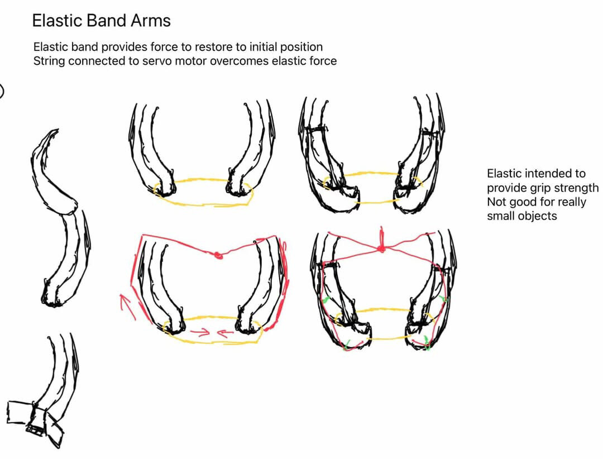
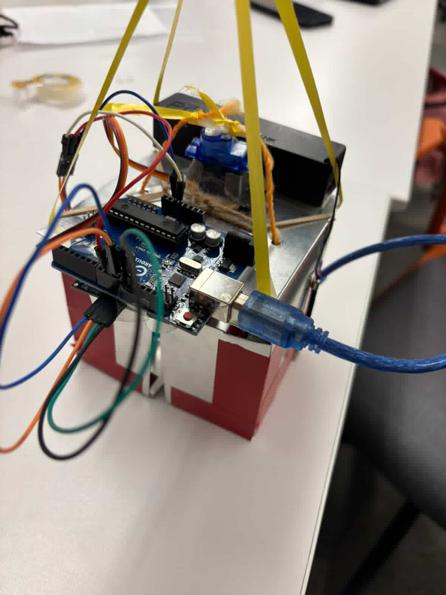

Servo Claw
Sensor-driven pick-and-grab mechanism, built with a team
A mechanical claw I built with a group of students that can spot and grab a nearby object completely on its own, no button, no manual trigger. The body is made from sheet metal folded into a triangular head that holds the electronics, with two hinged panels on either side that swing in to close around whatever the sensor picks up.
There's an ultrasonic sensor on the claw's head, kind of positioned like a pair of eyes, that constantly measures how far away the nearest object is by timing how long a sound pulse takes to bounce back. Once something gets close enough, that distance reading is what actually tells the Arduino to start closing the claw. Nobody has to press anything.
Once it's triggered, a servo at the claw's core rotates through a set range to swing the two gripper panels shut around the object, then just holds there instead of continuing to rotate. Getting this actually reliable took a lot of tuning. I had to map the servo's rotation range onto the panels' physical range of motion so it grips tight enough without straining the hinges, and I had to tune the sensor's trigger distance so it grabs consistently instead of firing too early on nearby clutter or missing things that are a bit farther out.
I helped write the rotation-control code that drives the servo through the open-close sequence based on the sensor readings, and helped build the physical claw itself: cutting and folding the sheet metal, mounting the sensor and servo, and wiring it all back to the Arduino. Working on it drove home how much the mechanical build and the code depend on each other in a project like this. Neither one works on its own if the other isn't dialed in.

